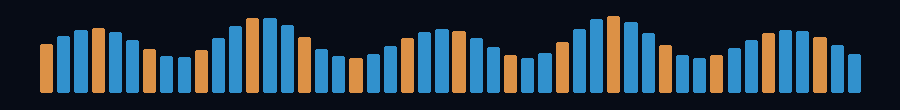

Hey, I'm Gaurav 👋
AI Engineer · Full-Stack Builder · Pianist 🎹
I build systems by day and play them by ear at night.
🎼 Currently Composing
AI Agents █████████░ building Voice AI ████████░░ experimenting Backend Systems █████████░ shipping Piano ██████████ always

🎧 Featured Tracks
| Track | Project | What it does | Built with |
|---|---|---|---|
| 01 | Lull | Mood-aware AI voice agent | FastAPI · Deepgram · ElevenLabs · Claude · PostgreSQL |
| 02 | ContentPlus | AI classification and data pipeline | Python · PostgreSQL · REST APIs · GitHub Actions |
| 03 | ShipGuard | Multi-agent shipping risk monitor | Python · AI Agents · APIs · Docker |
| 04 | AI Voice Bot | Real-time phone agent | Python · Flask · Twilio · Claude |
🛠️ My Instruments
Languages: Python · TypeScript · JavaScript · SQL · Java
Frontend: React · Next.js · HTML · CSS · Tailwind CSS
Backend & Data: FastAPI · Flask · Django · Node.js · REST APIs · PostgreSQL · Redis
AI: Claude · OpenAI API · AI Agents · RAG · LangChain · LLM Evaluation
Engineering: Docker · GitHub Actions · CI/CD · Linux · Testing · System Design
🎹 Live Motion

Code. Create. Compose. Repeat.
🧠 How I Build
01 Understand the problem before touching the stack 02 Build the smallest useful version 03 Use AI to move faster — never as an excuse to stop thinking 04 Test the ugly failure paths, not only the happy path 05 Measure, simplify, ship
🎵 The Other Side of Me
I've been playing piano for years, and it changes the way I think about engineering.
Same patterns. Different instruments.